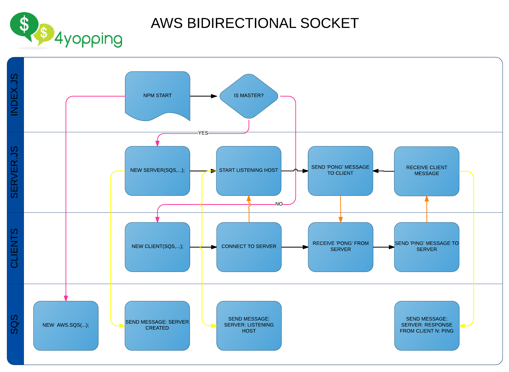

sqs-bidirectional-socket

 This is an example of bidirectional communication between 2 nodejs servers that saves logs in aws
This is an example of bidirectional communication between 2 nodejs servers that saves logs in aws
Install
npm install
Optional
You can use mocha installed globally with:
npm install mocha -g
But it is not required.
Test
After install use:
npm tests
This will test your AWS credentials and your AWS SQS permissions.
Config
You don't need to config anything, just set up your AWS credentials, for more information follow this link.
How it works
Take a Diagram with you:
